We assess the room as a whole.
We identify the visible wear, practical repairs, hardware that should be replaced, and the details that keep the space looking tired.
Peeling paint. Dirty grout. Rusty stall hardware. Wobbly tables. Old caulk. Beat-up doors. Little repairs that have piled up.
You don't need a renovation.
You need a Precision Refresh™.
North Jersey · Restaurants · Bars · Cafés · Bakeries · Delis · Fast casual
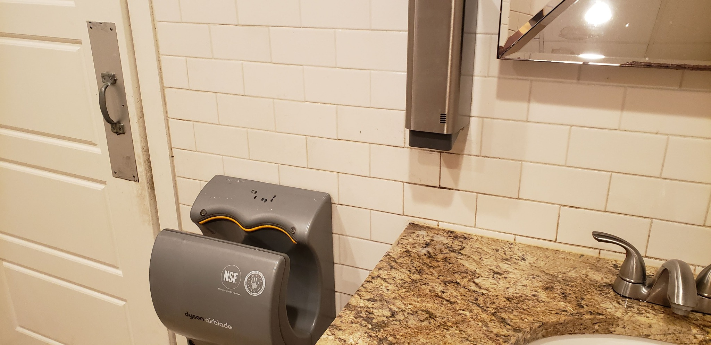
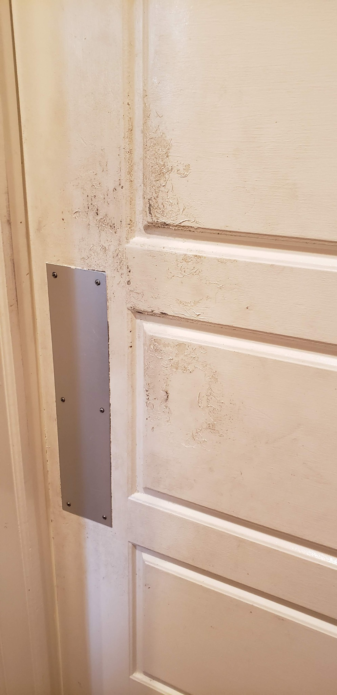
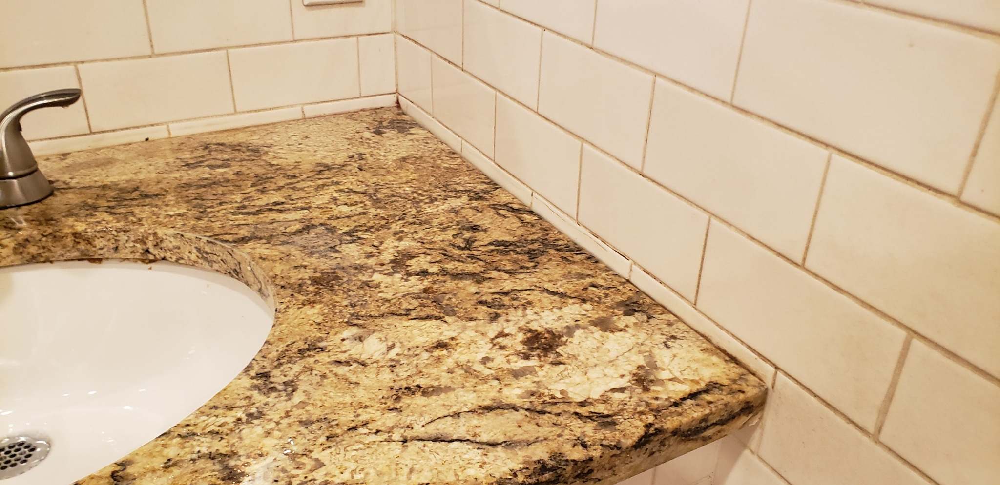
You can hire a cleaner, then a painter, then someone for hardware and small repairs — and coordinate every schedule, material choice and follow-up yourself. Or you can call GPPS.
We identify the visible wear, practical repairs, hardware that should be replaced, and the details that keep the space looking tired.
No disconnected task list. The scope is built around the finished appearance of the room and the existing design aesthetic.
Cleaning, prep, paint, caulk, hardware and practical minor repairs are coordinated as one job with one point of contact.
Precision Refresh™ is not designed to be the cheapest way to buy individual cleaning, painting or repair tasks. It is designed for restaurant owners who value the finished result, convenience and attention to detail. Because completing the tasks isn't the same as completing the room.
If the room itself is basically sound, replacing everything may solve the wrong problem. Precision Refresh™ restores what you already have for a fraction of the cost and with far less disruption than a full renovation.
Your cleaner cleans. Your painter paints. Your repair person fixes one thing. A remodeler wants a renovation. Nobody is necessarily responsible for how the whole room looks when everyone leaves.
So the little problems accumulate until a good restaurant starts looking tired.
A loose toilet seat may take only minutes to tighten. That does not make it unimportant. The point is that small problems often stay unfixed until someone takes responsibility for the whole room. When a seat is worn or repeatedly comes loose, we can replace it with a commercial-grade seat using an anti-loosening fastening system rather than simply retightening the same hardware.
Precision Refresh™ is restorative property care — not routine janitorial cleaning and not a full remodel.
We target accumulated grime routine cleaning often leaves behind: grout, tile, countertops, partition surfaces, doors, trim, hardware, corners and hard-to-reach details.
Routine cleaning keeps up. Precision Refresh™ catches up.Doors, trim, walls, scuffs, chips, minor surface imperfections and practical cosmetic repair of abandoned mounting holes.
Same space. Same character. Far less wear showing.Stall latches, strikes, pulls, hooks, bumpers, toilet seats, cabinet hardware, door hardware and other practical non-licensed-trade repairs where the underlying material is still sound.
Fix the details before they become bigger problems.Loose legs, fasteners, minor wobble and adjustment issues can often be tightened or stabilized before damage progresses.
We assess what can reasonably be saved — and tell you when it can't.Not every table, chair, stall or fixture can be economically repaired. Shoddy construction, stripped material, broken components, severely torn sheet metal, failed wall substrates or advanced damage may require replacement or a separately quoted repair. Furniture refinishing is not part of Precision Refresh™.
Licensed plumbing and electrical work are outside the Precision Refresh™ scope. If we spot an issue that requires a licensed trade, we will flag it so it can be handled separately.
These are the kinds of conditions Precision Refresh™ is designed to address where practical — grime, failed caulk, graffiti, corroded hardware, loose components and improvised-looking fixes.
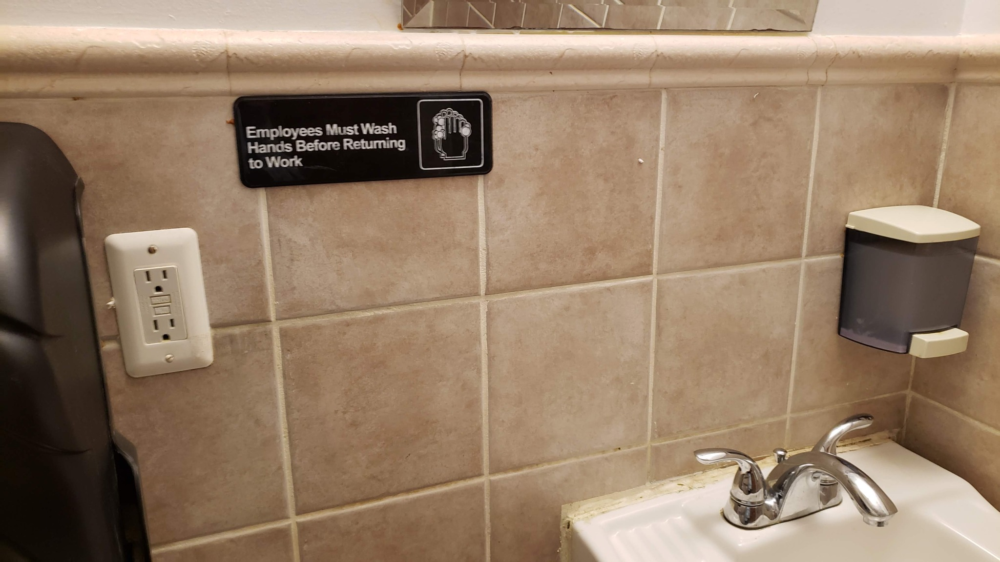
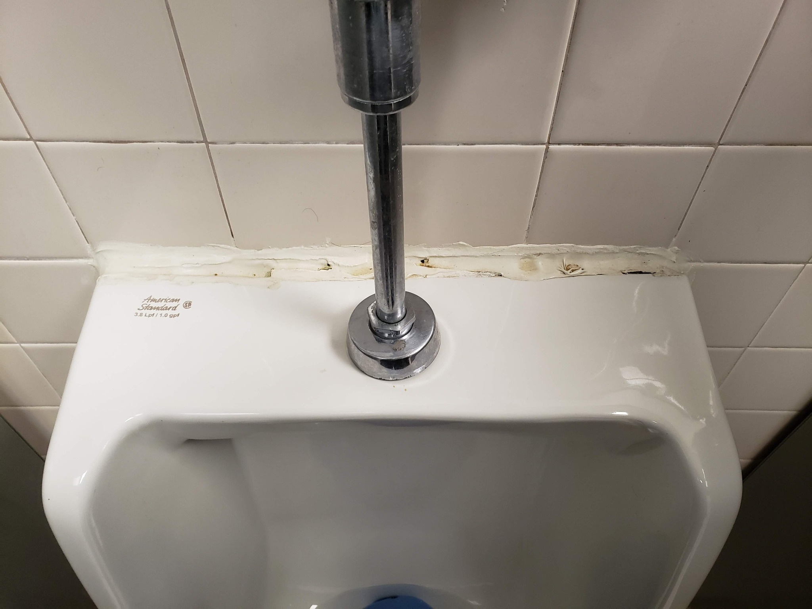
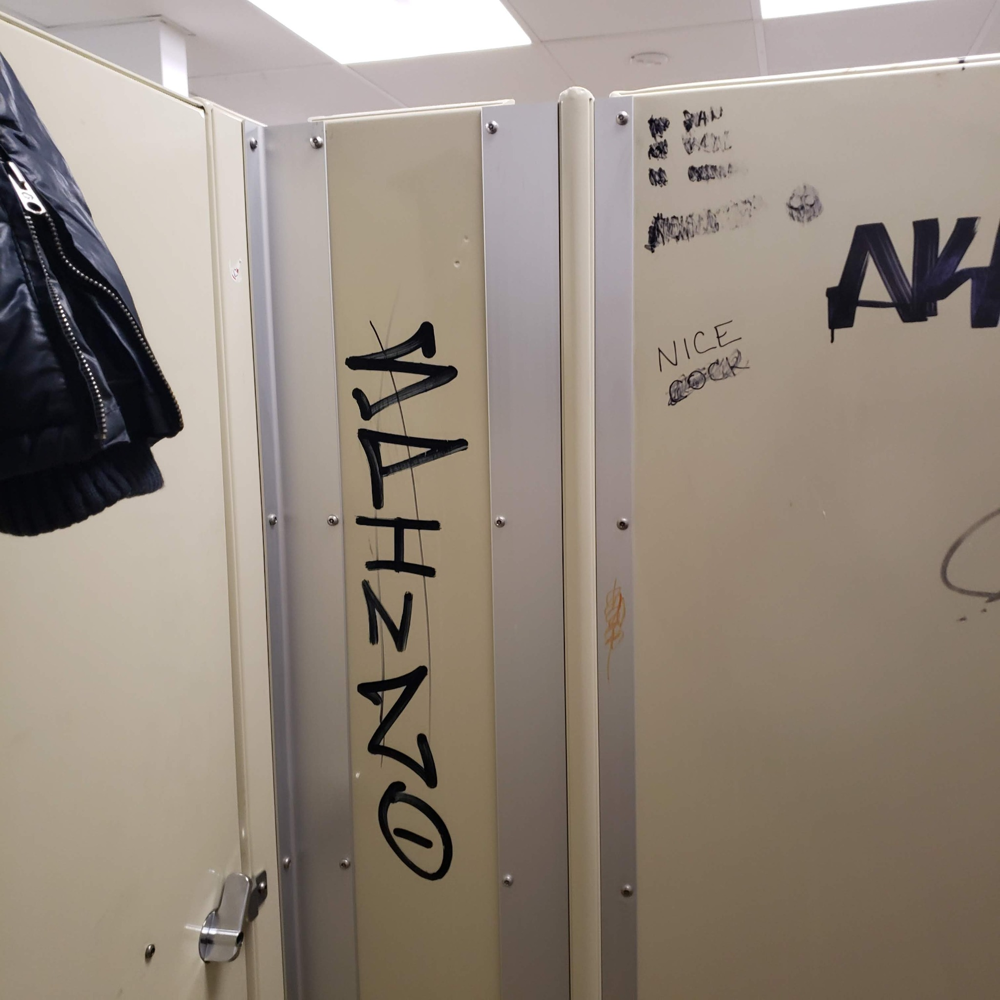
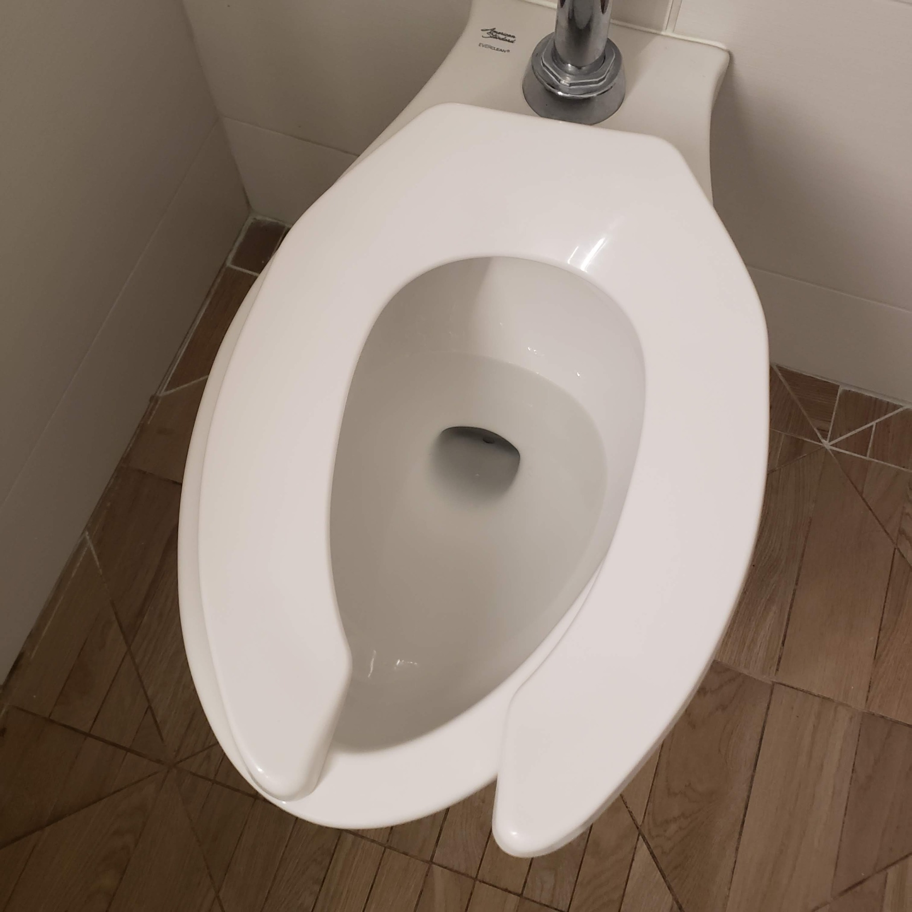
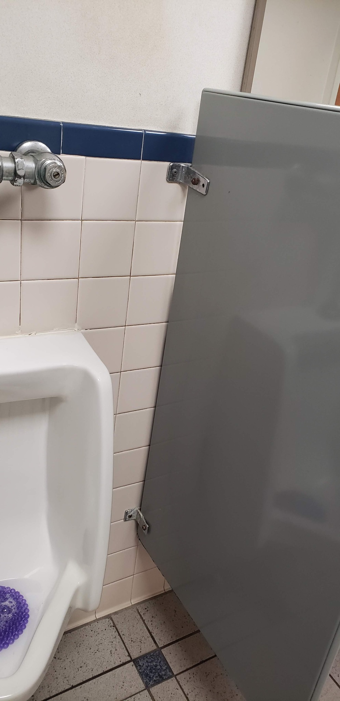
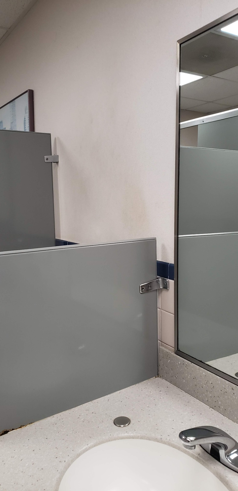
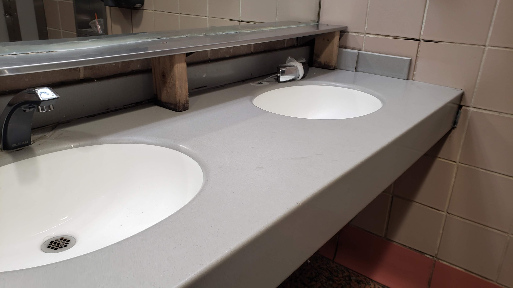
Pricing shown is based on a typical single restaurant restroom of approximately 8' × 8' to 9' × 9'. Larger restrooms, multiple restrooms, dining areas and other spaces are quoted separately.
For a fundamentally sound restroom that needs a serious visual reset — not a partial clean-up.
GPPS selects commercially appropriate replacement hardware that closely matches the existing style and finish whenever practical. Customer approval is requested when the choice materially changes the look.
Request a Complete RefreshFor a restroom whose existing partitions are too tired, damaged or graffitied to deliver the near-new transformation we want.
Partition systems, freight and specialty materials are priced separately based on the actual selection. Installation labor is included in the Premier quote. Failed wall substrates, major structural backing repairs or other concealed conditions are separately quoted.
Ask About PremierIf your only goal is the lowest possible price on an isolated cleaning, painting or repair task, this probably isn't the right service. We price the refresh around the finished room — not around doing the minimum needed to check individual tasks off a list.
Published pricing is based on normal working-hour conditions. Many restaurant refreshes may be possible during quieter weekday windows — especially where a second restroom remains available. After-hours or overnight work can be quoted when needed.
We're selecting a limited number of North Jersey restaurants for introductory case-study pricing so we can document true before-and-after transformations.
Qualifying restaurants must allow GPPS to photograph and film the before-and-after transformation for our portfolio. If you're pleased with the result, we'll also ask for an honest review.
Tell us what looks tired. Photos are welcome.
See if your restaurant qualifiesThis is a real GPPS residential restoration — not a restaurant project and not an AI-generated after. It shows the standard we aim for: take a worn, lived-in space and make it look clean, cared for and dramatically fresher again.
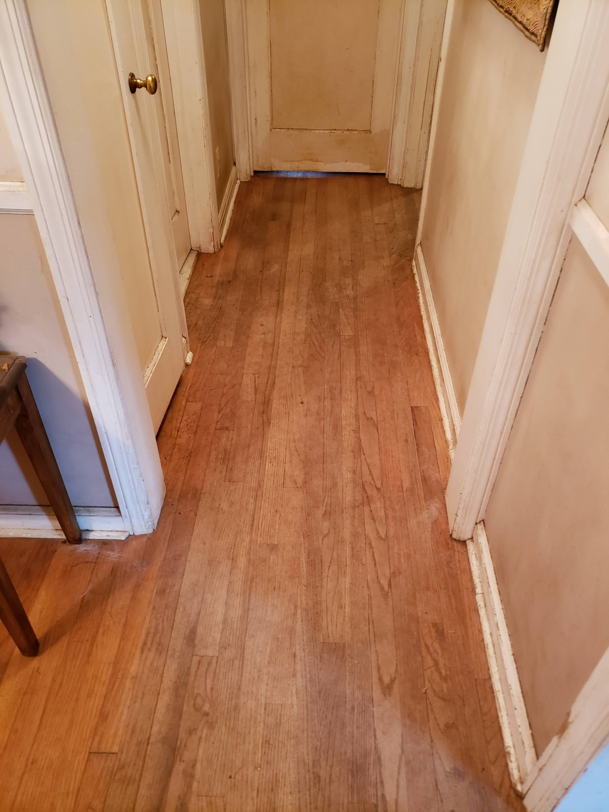
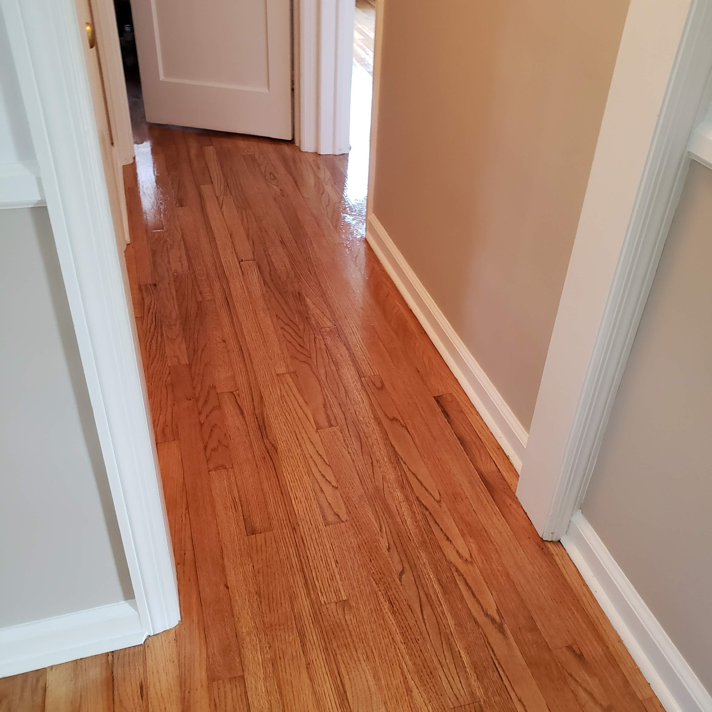
We are offering limited introductory pricing to build a true restaurant before-and-after portfolio. We will never present a concept image as a completed GPPS restaurant project.
Precision Refresh™ isn't about remodeling a perfectly usable restaurant. It's about bringing the existing space back close to new while preserving the same layout, character and design aesthetic — and noticing the little things other people walk past.
Clean. Restore. Refresh.
Tell us what looks tired. We can start with photos and a short description.